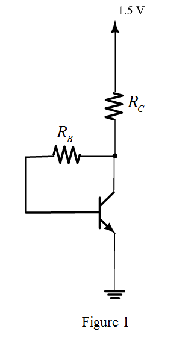

Apply Kirchhoff’s voltage law in Figure 1.
Substitute 0.7 V for  ,
,  for
for , for
, for  and 100 for
and 100 for .
.

(a)
Refer to the Figure P9.41 in the text book.
Draw the following circuit diagram:

Apply Kirchhoff’s voltage law in Figure 1.
Substitute 0.7 V for , for, for and 100 for.
Determine the value of collector current.
Substitute 100 for  and for
and for .
.
Therefore, the value of collector current is.
(b)
Determine the value of transconductance.

Substitute 0.54 mA for  and 25 mV for
and 25 mV for  .
.
Therefore, the value of transconductance is.
Determine the value of resistance .
.
Substitute 100 for  and 21.6 mA/V for
and 21.6 mA/V for  .
.
Therefore, the value of resistance  is .
is .
Determine the value of voltage gain.
Substitute 100 for  , for ,
, for ,  for
for  and
and  for
for  .
.
Therefore, the value of voltage gain is.
(d)
Determine the value of input resistance.
Substitute for  , for ,
, for ,  for
for  and
and  for
for  .
.
Therefore, the value of input resistance, is .
(e)
Determine the value of midband voltage gain.
Substitute for , 21.6 mA/V for
, 21.6 mA/V for  ,
, for
for  ,
,  for
for  and
and  for
for  .
.
Therefore, the value of voltage gain is.
Determine the voltage gain with negative feedback.
Substitute 8.87 V/V for, for
for ,
, for
for  ,
, for
for  .
.
Therefore, the overall gain is .
Determine the value of capacitance .
.
Substitute 0.8 pF for  , 21.6 mA/V for
, 21.6 mA/V for  and 600 MHz for
and 600 MHz for  .
.
Determine the value of input capacitance.
Substitute 0.8 pF for  , 21.6 mA/V for
, 21.6 mA/V for  , 4.92 pF for and for
, 4.92 pF for and for .
.
Therefore, the value of input capacitance is.
(g)
Determine the value of resistance.
Substitute  for
for and
and  for
for  .
.
Determine the value of 3 dB frequency.
Substitute for and 58.856 pf for  .
.
Therefore, the value of 3dB frequency is .